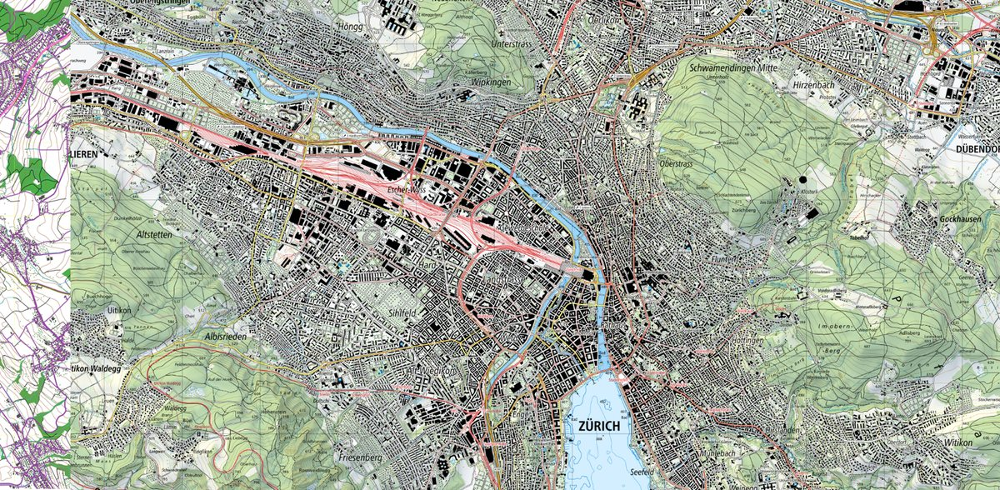

Diffusion models for urban change detection from historical maps
Simulated urban change in vector data, generated synthetic pre- and post-change map tiles with ControlNet-guided Stable Diffusion, and trained change-detection models (ChangeFormer, MambaBCD) that transfer to real historical maps.